圣地亚哥·拉蒙-卡哈尔是西班牙组织学家，因提出神经元或神经细胞是神经系统结构的基本单元的理论，（与卡米洛·高尔基一起）获得了1906年的诺贝尔生理学或医学奖。他的这一发现帮助人们深入认识了神经细胞在神经系统功能中起到的基本作用，为现代生物学对神经冲动方面的理解做出了开创性的贡献。
1852年 5月1日生于西班牙。
1870年 进入萨拉戈萨大学学习。
1873年 在萨拉戈萨大学获得医学学位，取得行医执照。经过一次竞争性的考试，成为一名军医。
1874年 随西班牙军队去往古巴，在那里染上了疟疾和肺结核病。
1875年 回到西班牙，成为萨拉戈萨大学医学专业解剖学系助理教授。
1879年 担任萨拉戈萨博物馆负责人。与西尔维娅·加西亚结婚（他们有4个女儿和3个儿子）。
1880年 以西班牙语出版了《肠系膜、角膜和软骨感染实验观察》。
1883年 在马德里获得医学博士学位，经全体人员一致通过，在巴伦西亚大学被提名为系统解剖学和解剖学总论教授。
1884年 担任巴伦西亚大学系统解剖学教授，直到1887年。
1887年 首次从L.西马洛（L.Simarro）那里知道重铬酸亚银技术；担任巴塞罗那大学组织学和病理解剖学教授，直至1892年。
1888年 决定研究晶胚。
1889年 以西班牙语出版了《正常组织学和显微摄影技术手册》（Manual de Histología normal y técnica micrográfica）第一版；在柏林大学举行的德国解剖学会会议上，进行了一次小规模的学术展览。
1892年 担任马德里大学组织学和病理解剖学教授，直到1922年。
1894年 被剑桥大学授予名誉医学博士学位，以法语出版了《有关神经中枢精细解剖学的新观点》一书。
1895年 成为马德里皇家科学院院士。
1896年 被德国维尔茨堡大学授予名誉医学博士学位。
1897年 成为马德里皇家医学院院士；加入西班牙自然历史学会；成为里斯本科学院院士。
1899年 被美国克拉克大学（Clark University）授予名誉哲学博士学位，在该大学，他与其他来自欧洲的被称为“科学巨星”的科学家们一起向公众介绍自己的研究工作。
1902年 被任命为西班牙“生物研究中心”和“国立卫生学研究院”负责人。
1903年 发展了高尔基利用硝酸银染色技术，促进了对晶胚和小动物的脑神经组织、感知中枢和脊髓的微观结构的研究工作。
1906年 由于提出了神经元或神经细胞是神经系统结构的基本单元的理论，获得1906年诺贝尔生理学或医学奖。
1909—1911年 以法语出版了《人和脊椎动物神经系统组织学》一书。
1913年 改进了金染色方法，推动了对晶胚和小动物的脑神经组织、感知中枢和脊髓的微观结构的研究工作；以西班牙语出版了《神经系统的退化和再生》（Estudios sobre la degeneración y regeneración del sistema nervioso）一书。
1920年 西班牙国王阿方索十三世（Alfonso XIII）下令在马德里成立卡哈尔研究院，拉蒙-卡哈尔在这里工作直到去世。
1922年 结束学术生涯。
1934年 10月17日在马德里去世。
我希望这本小书能帮助勤奋好学的年轻人增长对学术与科学工作的热情；我也希望书中的文字可以重新点燃那些正在坎坷路途上跋涉的研究者们的信心。
——圣地亚哥·拉蒙-卡哈尔
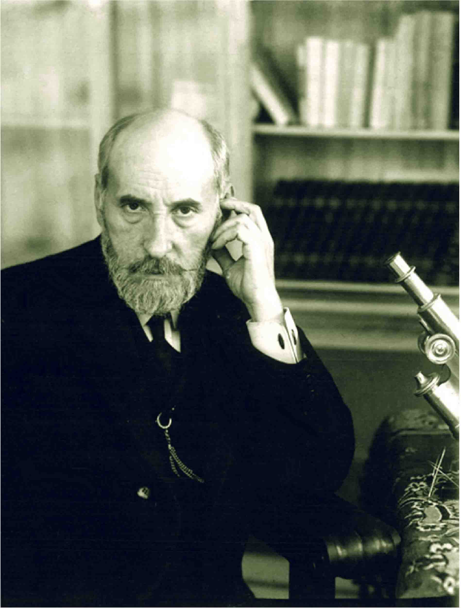
圣地亚哥·拉蒙-卡哈尔
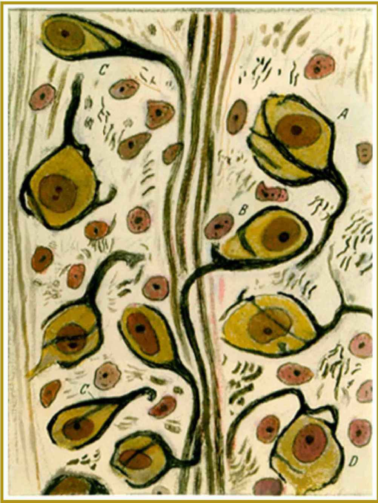
卡哈尔经典手绘图一 梯形细胞核内的赫尔德萼
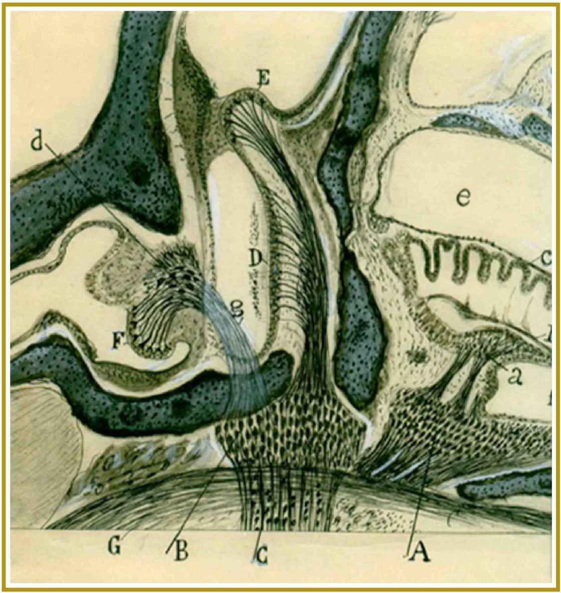
卡哈尔经典手绘图二 内耳迷路
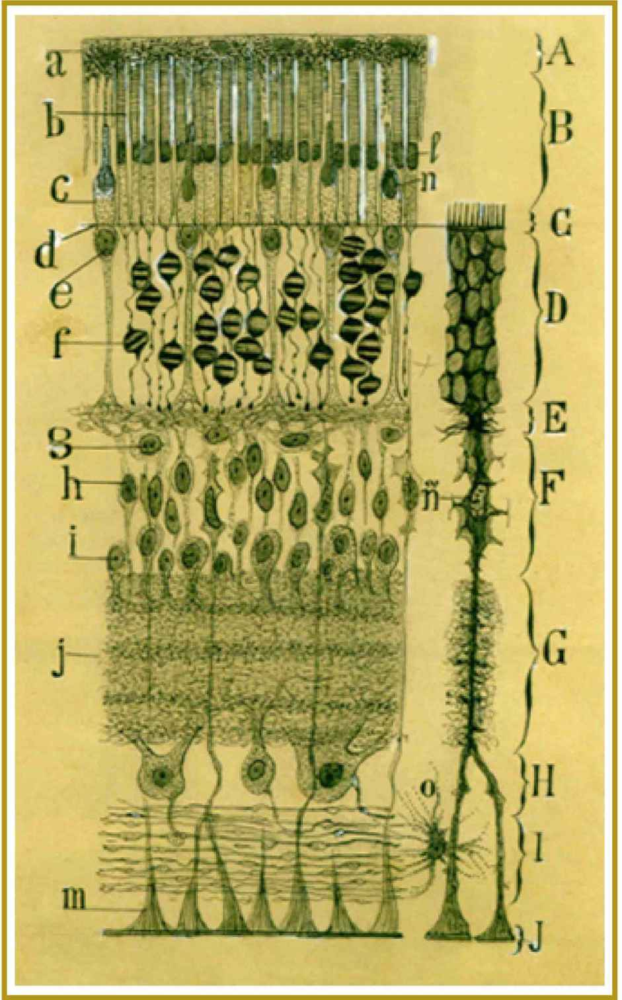
卡哈尔经典手绘图三 眼部视网膜细胞
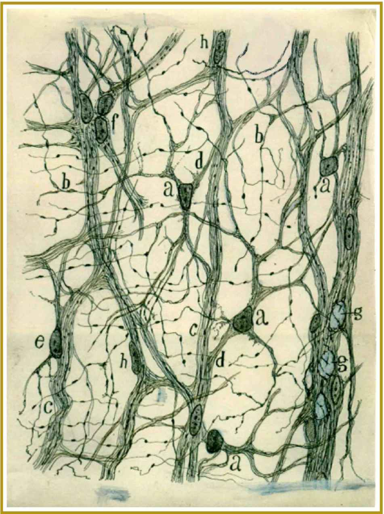
卡哈尔经典手绘图四 青蛙小肠里的神经元
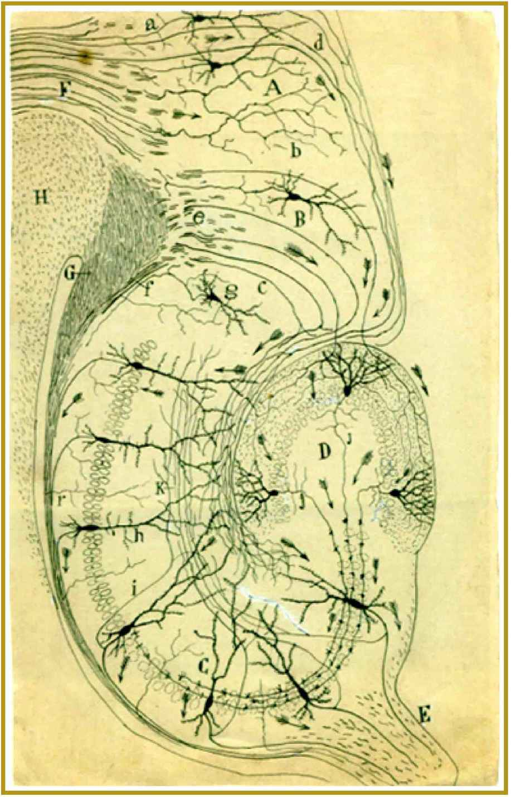
卡哈尔经典手绘图五 海马迴的结构与连接
做自己的思考者
别让自己的头脑成为别人思想的跑马场。——亚瑟·叔本华
进阶书系延伸阅读
我们旨在突破一直以来强调的应试教育，全面提升大学生及科研工作者在课堂及学术工作中的批判性思维、逻辑推理、学科学习、演讲辩论、独立开展项目研究及科研写作能力。产品作者均为国内外著名学府相关学科学者教授，内容强调“实操性”。我们不告诉你为什么，只告诉你找到为什么的方法。
《高效写作的秘密》
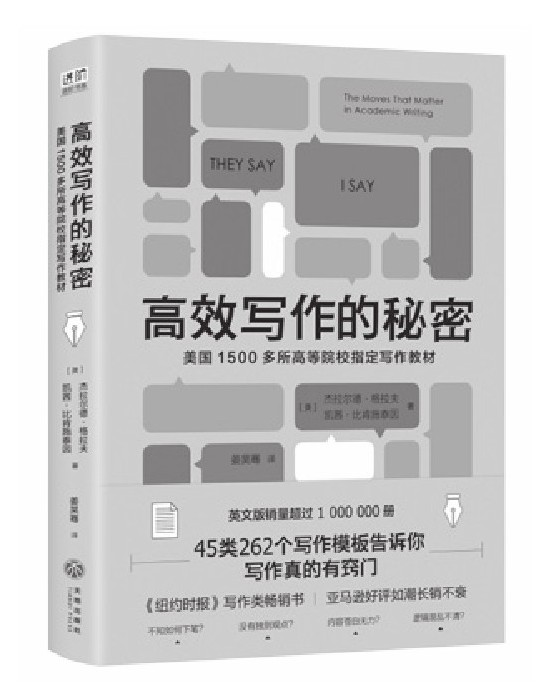
《如何形成清晰的观点》
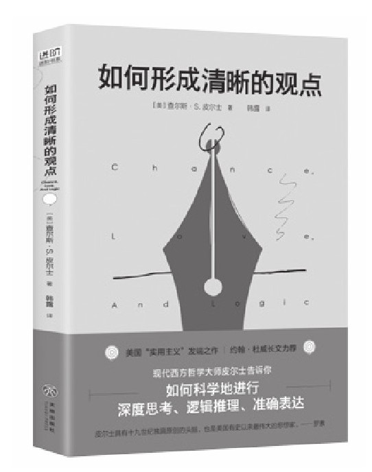
《论证是一门学问》
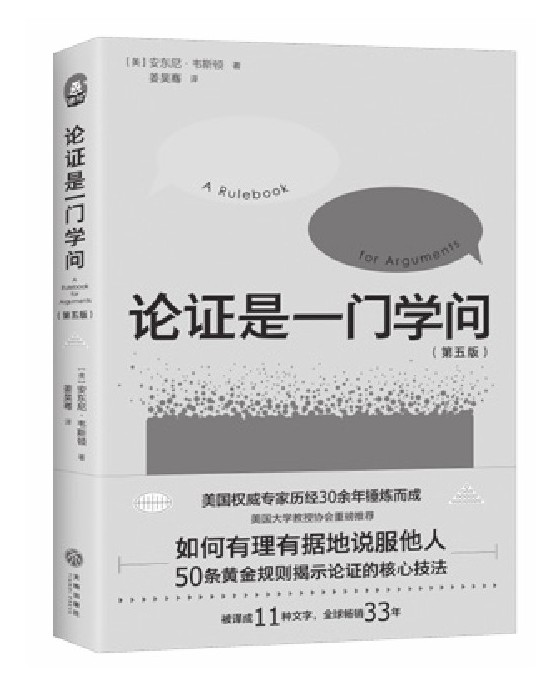
《高效论证》
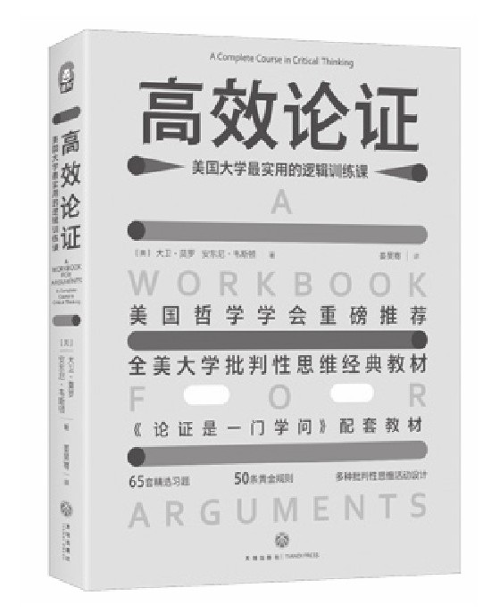
《我们如何思维》
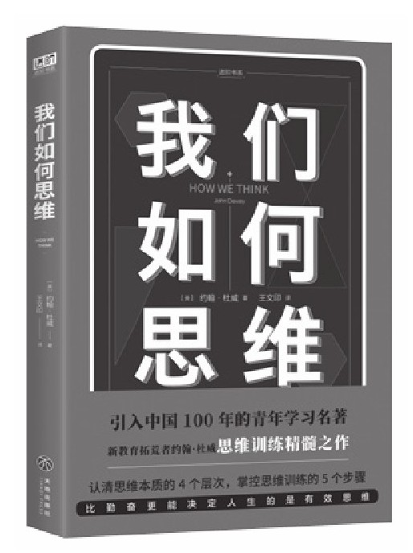
《思维的模式》
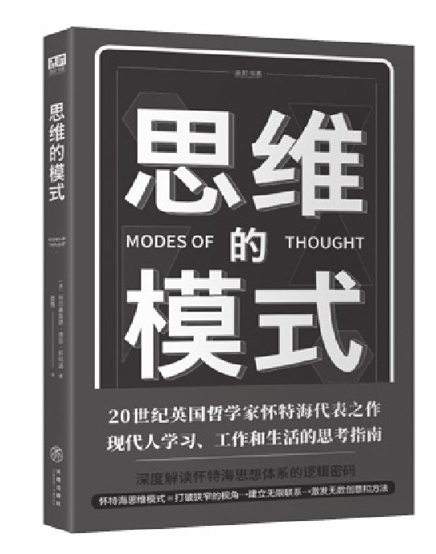